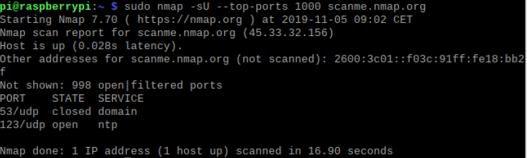
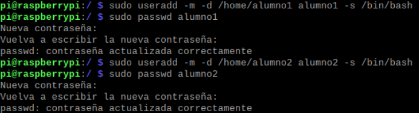
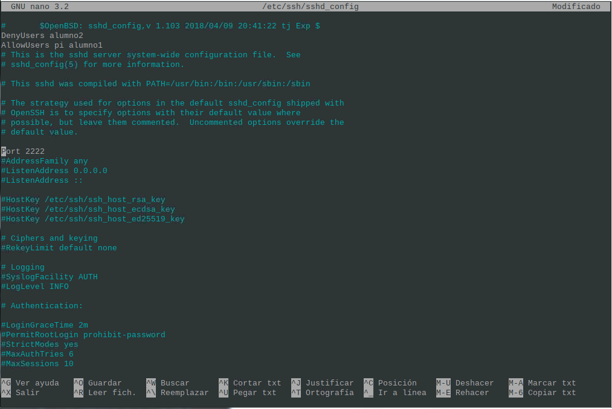
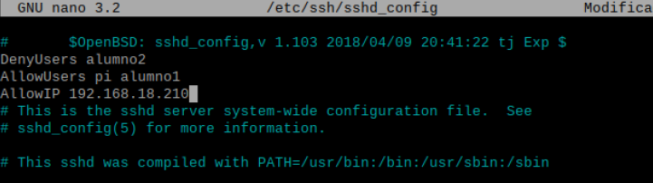
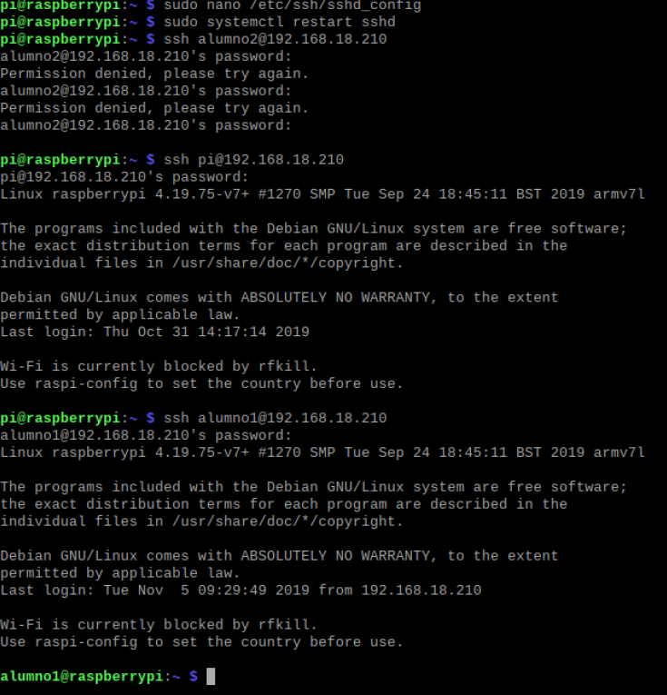
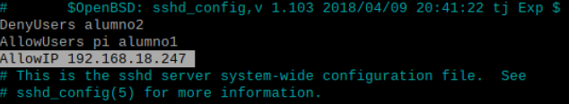
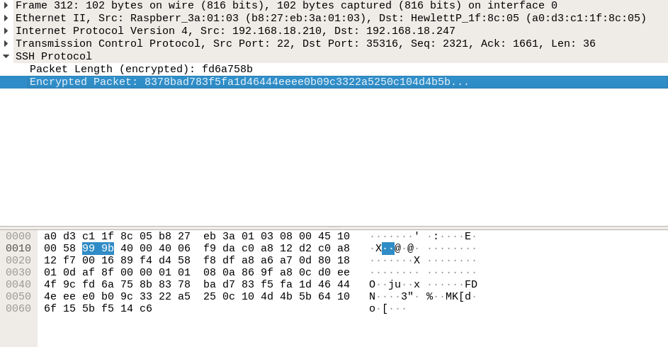

¿Que es Docker?
Docker es un Subsistema de virtual ización que comparte con el anfritión el Kernel y el sistema de archivos .El anfitrión siempre es un sistema Linux. Si estamos en Windows o Mac, necestaré u na maquina virtualizada con VirtualBox o similar.
Un software de máquinas virtuales necesita instalar el sistema operativo completo. Ejemplos de sistemas de virtualización.
- ◼ VirtualBox
- ◼ Hyper-V (Windows)
- ◼ Parallels (MAC)
- ◼ VMWare (Multiples plataformas)
- ◼ QEMU (Linux)
- ◼ XEN (Linux/UNIX)
- ◼ KVM (Linux/UNIX)
Un software de contenedores es un sistema de virtualización que comparte el Kernel con el anfitrión. Se basa en el concepto de microservicio, donde tengo todos los programas instalados, configurados y funcionando, gracias a los contenedores. Ejemplo se software de contenedores.
- ◼ LXD (Linux)
- ◼ Docker
- ◼ Kubernetes

Para saber mas sobre el Tema:
Dockerfiles, ¿Que son?
Un dockerfile es una receta para crear u na imagen para una de aplicación particula r de Docker. De este modo podemos tomar una i magen base, instalarle programas, configurar e sos programas y dejarla preparada para crear con tenedores a partir de ella
Ejemplo Dockerfile
- # use phusion/baseimage as base image.
- from Ubuntu:latest
- # use baseimage-docker's init system.
- cmd ["/sbin/my_init"]
- # install prerequisites
- run apt-get update; \
- apt-get install -y udhcpd
- # set up start up scripts
- run mkdir /etc/service/udhcpd
- add udhcpd.sh /etc/service/udhcpd/run
- run chmod +x /etc/service/udhcpd/run
- # clean up apt when done.
- run apt-get clean && rm -rf /var/lib/apt/lists/* /tmp/* /var/tmp/*
- # expose the port
- expose 67
- expose 67/udp
- expose 68
- expose 68/udp
- # volumes
- volume /data
Comando from: Buscas la imagen mas reciente de ubuntu con ubuntu:latest
Comando run: Ejecutas y añades scrip para actualizar el sistema e instalar udhcp
Comando expose: Abres los puertos 67 y 68
Comando volume: Comparte una carpeta entre el contenedor de docker y el host
¿Que es el SSH?
SSH o Secure Shell, es un protocolo d e administración remota que le permite a los usuarios controlar y modificar s us servidores remotos a través de Inter net a través de un mecanismo de autenticación.
Proporciona un mecanismo para autenticar un usuario rem oto, transferir entradas desde el c liente al host y retransmitir la salid a de vuelta al cliente. El servicio se creó como un reemplazo seguro para el Telnet sin cifrar y utiliza técnicas criptográficas par a garantizar que todas las comunicaciones hac ia y desde el servidor remoto sucedan de manera encriptada.
Instalamos el servidor SSH en Linux y comprobamos que se escucha el puerto 22.
sudo nmap -sU --top-ports 1000 scanme.nmap.org
Crear dos usuarios denominados usuario1 y usuario2.
ssudo useradd -m -d /home/alumno1 alumno1 -s /bin/bash
Cambiar de puerto del servidor e intentar acceder de nuevo
Port 2222
Cambiar configuracion del servidor para acceder con el usr1 y no con el usr2
AllowUsers alumno2 , DenyUsers alumno2
Intentamos acceder
ssh alumno2@192.168.18.210
Cambiamos la configuracion para que solo pueda acceder una Ip determinada
AllowIP 192.168.18.247
Buscamos el paquete del SSH dentro de WireShark y comprobaremos que esta encriptado
Efectivamente, está Encriptado
¿Que es Telnet?
Telnet es una herramienta que ha sido utilizada durante décadas por los administr adores de sistema informáticos en el ámbito de l as redes. Las conexiones remotas no son algo precis amente nuevo, ya desde las primeras redes y con sistem as sin escritorio se utilizaban herramientas como Telnet para conectarnos a servidores y equipos conectados a una red, tanto de forma remota como interna